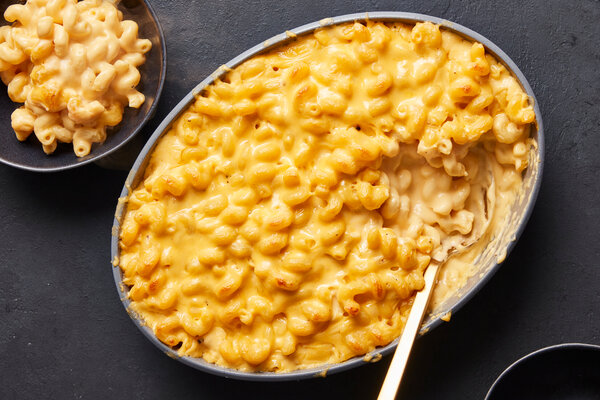

Mac and Cheese
Mac and Cheese

Mouth watering Mac and Cheese
You will need only the
most basic of ingredients to make this delicious Mac and Cheese
Ingredients
- 100g Cheddar cheese
- 100g Mozzeralla cheese
- 100g Gouda cheese
- 500g Macaroni elbow pasta
- 100ml Milk
Steps
- Boil pasta for 10 minutes. Drain pasta in colander when done boiling.
- In a sauce pan or pot boil 50ml milk on medium to low heat
- Add 50g of each cheese to warm milk. Stir continously.
- Add pasta to the pot and stir.
- Add remaining cheese and milk to the pot and stir to mix in well.